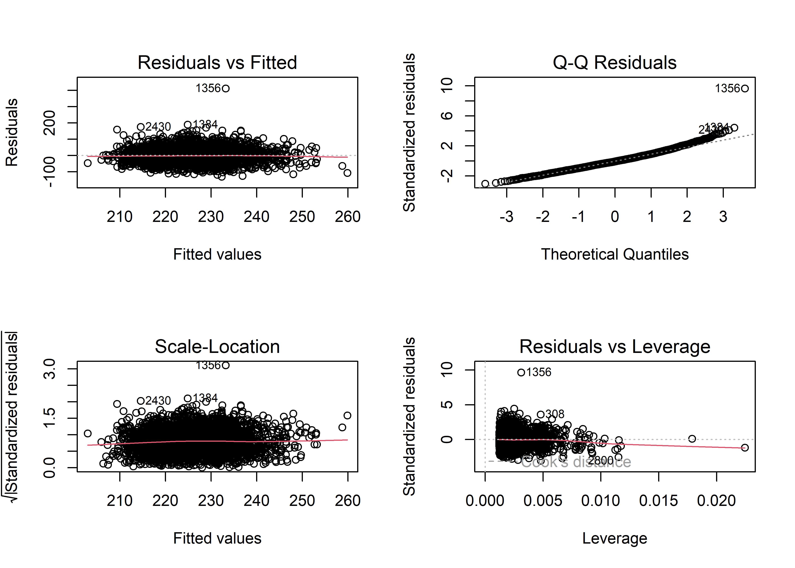
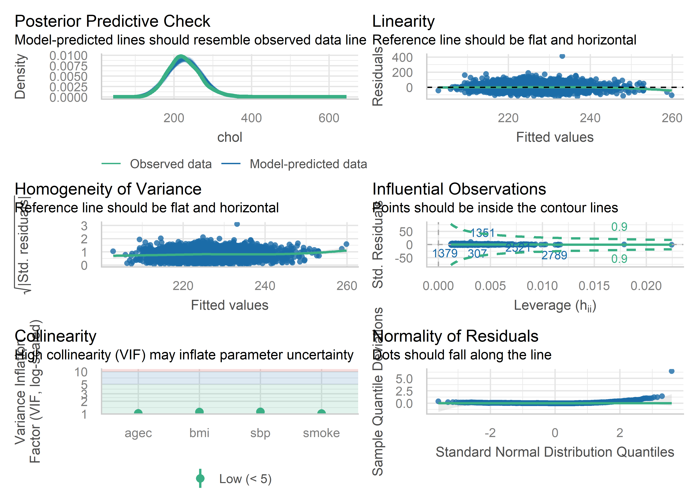

Linear regression is a statistical method used to model the relationship between a dependent (outcome) variable and one or more independent variables (predictors) by fitting a linear equation to the observed data. The goal is to find the best-fitting line that minimizes the sum of squared differences between the observed and predicted values — the method of ordinary least squares (OLS). This chapter builds simple linear regression (SLR, one predictor) up to multiple linear regression (MLR, several predictors), covers how to check whether the model is trustworthy, and shows how to use the fitted model to predict new values. Examples below use the Western Collaborative Group Study (wcgs) data already introduced in Section 5, modeling serum cholesterol (chol) as a function of systolic blood pressure (sbp), age category (agec), smoking (smoke), and body mass index (bmi).
Simple Linear Regression
With one continuous predictor \(x\), the theoretical (population) model is:
\[ y = \beta_0 + \beta_1 x + \varepsilon, \qquad \varepsilon \sim N(0,\sigma^2) \]
\(y\): dependent (response/outcome) variable
\(x\): independent (explanatory/predictor) variable — “simple” means there is only one
\(\beta_0\): the intercept — the average value of \(y\) when \(x = 0\)
\(\beta_1\): the slope — how much the average of \(y\) changes for a one-unit increase in \(x\)
\(\varepsilon\): the error term, the part of \(y\) not explained by \(x\); assumed normally distributed with mean 0 and constant variance \(\sigma^2\)
Because \(\beta_0\) and \(\beta_1\) are population parameters and are never known exactly, we estimate them from sample data, denoted with a “hat”: \(\hat\beta_0\), \(\hat\beta_1\). The resulting prediction equation is \(\hat y = \hat\beta_0 + \hat\beta_1 x\).
Estimating the Coefficients: Ordinary Least Squares
Among all possible lines through the data, OLS chooses the one that minimizes the sum of squared residuals (the vertical distances between each observed point \(y_i\) and the line’s predicted value \(\hat y_i\)):
\[ \hat\beta_1 = \frac{SS_{xy}}{SS_{xx}} = \frac{\sum(x_i-\bar x)(y_i-\bar y)}{\sum(x_i-\bar x)^2} \qquad \hat\beta_0 = \bar y - \hat\beta_1 \bar x \]
In R, lm() computes these estimates directly — you will never need to compute them by hand, but the formulas explain why the “best fit” line is the one it is: it minimizes total squared error.
Model Assumptions (LINE)
Simple and multiple linear regression share the same four assumptions, conveniently remembered by the acronym LINE:
L — Linear relationship: the true relationship between \(x\) and \(y\) is a straight line
I — Independence: the error terms (and hence residuals) are independent of one another; violated most often when observations are correlated over time (autocorrelation) or clustered within subjects
N — Normality: the error terms are normally distributed with mean 0
E — Equal variances (homoscedasticity): the error terms have constant variance across all levels of \(x\)
If any of these assumptions are seriously violated, the resulting p-values, confidence intervals, and predictions may be unreliable or misleading. Assumptions should always be checked before interpreting the model output — see the diagnostics section below.
Worked Example: Fitting and Interpreting an SLR Model
# Simple linear regression: cholesterol as a function of systolic blood pressuremodel1<-lm(formula = chol~sbp,data =data )summary(model1)
#>
#> Call:
#> lm(formula = chol ~ sbp, data = data)
#>
#> Residuals:
#> Min 1Q Median 3Q Max
#> -123.39 -28.93 -3.11 26.26 409.61
#>
#> Coefficients:
#> Estimate Std. Error t value Pr(>|t|)
#> (Intercept) 180.71893 6.61496 27.320 < 2e-16 ***
#> sbp 0.35498 0.05109 6.949 4.47e-12 ***
#> ---
#> Signif. codes: 0 '***' 0.001 '**' 0.01 '*' 0.05 '.' 0.1 ' ' 1
#>
#> Residual standard error: 43.1 on 3140 degrees of freedom
#> (12 observations deleted due to missingness)
#> Multiple R-squared: 0.01514, Adjusted R-squared: 0.01483
#> F-statistic: 48.28 on 1 and 3140 DF, p-value: 4.466e-12
sjPlot::tab_model(model1) # Generate sleek table out of the model
chol
Predictors
Estimates
CI
p
(Intercept)
180.72
167.75 – 193.69
<0.001
sbp
0.35
0.25 – 0.46
<0.001
Observations
3142
R2 / R2 adjusted
0.015 / 0.015
Interpretation of \(\hat\beta_1\): for every one mmHg increase in systolic blood pressure, average cholesterol increases by \(\hat\beta_1\) units (read directly from summary(model1)), provided the p-value for sbp is below 0.05 — an estimate is only meaningful as a real association once it clears the significance threshold.
Testing the Slope: Is There a Linear Relationship at All?
If \(x\) and \(y\) are truly unrelated, the population regression line is horizontal, i.e. \(\beta_1 = 0\). This gives the central hypothesis test of SLR:
There are two equivalent ways to test this in simple linear regression:
Partial t-test on the slope: \(t = \dfrac{\hat\beta_1 - 0}{SE(\hat\beta_1)}\), with \(n-2\) degrees of freedom (the row for sbp in summary(model1))
Overall F-test from the regression ANOVA table (below)
For simple linear regression only (one predictor), these two tests always give the identical p-value, because the “effect of all X’s” and the “effect of the one X” are the same question. This equivalence breaks down once there is more than one predictor (multiple regression, below).
Five-step hypothesis-testing format (used throughout this book): (1) state \(H_0\) vs. \(H_1\); (2) set \(\alpha\) (usually 0.05); (3) obtain the test statistic from the model output; (4) obtain the p-value; (5) reject or fail to reject \(H_0\) and state the conclusion in the context of the research question.
The Regression ANOVA Table and \(R^2\)
Just as with one-way ANOVA (Section 5), the total variability in \(y\) can be partitioned into the part explained by the model and the part left unexplained:
The coefficient of determination, \(R^2 = SS_{Model}/SS_{Total}\), measures the proportion of the total variation in \(y\) explained by the model — for SLR only, \(R^2\) equals the square of the Pearson correlation coefficient between \(x\) and \(y\). A larger \(R^2\) indicates a better-fitting model, though \(R^2\) alone should never be used to judge whether a model is adequate (see the diagnostics and model-building chapters).
Prediction: Confidence Interval vs. Prediction Interval
Once a model is fit, it can be used to predict \(y\) at a new value of \(x\). Two different intervals answer two different questions:
Confidence interval for the mean of \(y\): how precisely do we know the average\(y\) for all subjects with this \(x\)?
Prediction interval: how precisely can we predict one individual’s\(y\) at this \(x\)?
The prediction interval is always wider than the confidence interval for the same \(x\) and confidence level, because predicting a single future observation carries more uncertainty (both the uncertainty in estimating the mean, and the individual’s own random deviation \(\varepsilon\) from that mean) than estimating the mean itself.
# Prediction of new_datadata_new<-data[seq(4,100,4),]# predict() function helps to predict the results from in the new datapredict(model1,data_new)
# Add predicted value to the new datadata_new$predicted<-predict(model1,data_new)# Confidence interval for the mean, and prediction interval for an individual, at each new xpredict(model1, data_new, interval ="confidence")[1:5,]
When \(x\) is categorical rather than continuous, R (like SAS) creates dummy (indicator) variables: for a two-level predictor (e.g., sex), one dummy variable coded 0/1 is created, and the level coded 0 is the reference level. The model \(y=\hat\beta_0+\hat\beta_1x\) is interpreted as:
When \(x=0\) (reference level): \(\hat y = \hat\beta_0\), i.e., the intercept is the average \(y\) in the reference group
When \(x=1\): \(\hat y = \hat\beta_0+\hat\beta_1\), i.e., \(\hat\beta_1\) is the difference in average \(y\) between the non-reference and reference groups
For a categorical predictor with \(L>2\) levels, R creates \(L-1\) dummy variables, all compared against a single reference level. This is exactly a two-sample (or one-way ANOVA–style) comparison expressed as a regression — testing \(H_0:\beta_1=0\) for a two-level predictor gives an identical p-value to an independent-samples t-test on the same two groups, and testing all dummy variables jointly (the overall F-test) for an \(L\)-level predictor gives an identical p-value to one-way ANOVA.
# Categorical predictor with 2 levels: does CHD status relate to cholesterol?model1b <-lm(chol ~ chd69, data = data)summary(model1b)
#>
#> Call:
#> lm(formula = chol ~ chd69, data = data)
#>
#> Residuals:
#> Min 1Q Median 3Q Max
#> -121.26 -29.26 -3.26 25.74 394.93
#>
#> Coefficients:
#> Estimate Std. Error t value Pr(>|t|)
#> (Intercept) 224.2614 0.7977 281.129 <2e-16 ***
#> chd69Yes 25.8087 2.7892 9.253 <2e-16 ***
#> ---
#> Signif. codes: 0 '***' 0.001 '**' 0.01 '*' 0.05 '.' 0.1 ' ' 1
#>
#> Residual standard error: 42.85 on 3140 degrees of freedom
#> (12 observations deleted due to missingness)
#> Multiple R-squared: 0.02654, Adjusted R-squared: 0.02623
#> F-statistic: 85.62 on 1 and 3140 DF, p-value: < 2.2e-16
Interpretation: the coefficient on chd69 is the difference in average cholesterol between the CHD and no-CHD groups (non-reference minus reference level) — compare this p-value to t.test(chol ~ chd69, data = data) and note they agree.
Multiple Linear Regression
Multiple linear regression (MLR) extends SLR to more than one predictor:
The Overall F-test vs. Individual (Partial) t-tests
With more than one predictor, the overall F-test and the individual partial t-tests answer different questions and generally give different p-values:
\[ \text{Overall: } H_0: \beta_1=\beta_2=\dots=\beta_k=0 \;\text{ vs. }\; H_1: \text{at least one } \beta_i \ne 0 \]\[ \text{Partial (per predictor): } H_0: \beta_i=0 \;\text{ vs. }\; H_1: \beta_i \ne 0, \qquad df = n-k-1 \]
The overall F-test asks whether the predictors as a set explain a significant amount of variation in \(y\); each partial t-test asks whether that specific predictor contributes significantly after adjusting for (holding constant) all the other predictors already in the model. A predictor can be significant on its own (in an SLR) but not in a partial test once other, correlated predictors are added — this is the regression analogue of confounding and is explored fully in the Interaction and Confounding chapter.
When a categorical predictor has more than two levels, its dummy variables should be tested jointly (an F-test across all its dummy variables, sometimes called a Type III test) to assess the overall effect of that variable, in addition to (or instead of) the individual pairwise t-tests against the reference level.
Interpretation of a multivariable coefficient: each coefficient represents the change in average \(y\) per one-unit increase in that predictor, holding all other predictors in the model constant (“adjusting for” the others). For example, the coefficient on sbp in model2 is the effect of blood pressure on cholesterol after adjusting for age category, smoking, and BMI — this adjusted estimate is generally different from (and more trustworthy than) the crude, unadjusted sbp coefficient from model1.
# Prediction from the multivariable modeldata_new<-data[seq(4,100,4),]predict(model2,data_new)
Regression Diagnostics: Checking the LINE Assumptions
Fitting a model is easy; trusting it requires checking that the LINE assumptions are reasonably satisfied. R’s base plot() method for a fitted lm object, and the more complete performance::check_model(), both provide the standard diagnostic plots.
# Model plots in 2 by 2 arrangement (base R)par(mfrow=c(2,2))plot(model2)

# Perform model diagnostics and allow us to see if any of the assumptions failed to meetperformance::check_model(model2)

Linearity: plot observed \(y\) (or residuals) against fitted \(\hat y\). Points should scatter evenly around a horizontal line at zero with no curved pattern; a curved pattern suggests a nonlinear relationship is being forced into a straight line.
Independence: plot residuals in the order they were collected (or against time, if applicable). Random scatter with no runs or oscillating pattern supports independence; long runs of same-signed residuals suggest autocorrelation, common in time-series or repeated-measures data (see the Repeated Measures chapter for the proper fix).
Normality: a histogram of residuals should be roughly bell-shaped and centered near zero, and points on a Q-Q plot should fall close to the diagonal reference line.
Equal variance (homoscedasticity): plot residuals against fitted values; the spread should stay roughly constant across the range of fitted values. A “funnel” or “fan” shape — residuals spreading out as fitted values increase — indicates heteroscedasticity, which inflates or deflates standard errors and makes p-values unreliable.
How to report an assumption check (matches the standard 5-step template used for hypothesis testing in this book): “Linearity: the fitted-vs-residual plot shows no curved pattern. Independence: residuals appear randomly scattered with no discernible pattern. Normality: the residual histogram is unimodal and roughly symmetric, and the Q-Q plot points fall close to the reference line. Equal variance: residual spread looks approximately constant across fitted values. In summary, all assumptions appear reasonably satisfied.”
AIC, BIC, and RMSE
# Determine the AIC, BIC, RMSE of the modelperformance::model_performance(model2)
AIC and BIC are model-comparison statistics — lower values indicate a better-fitting model relative to its complexity — and are most useful when comparing two or more candidate models (see the Model Building and Selection chapter), rather than interpreted in isolation for a single model. RMSE (root mean squared error) summarizes the typical size of prediction error in the original units of \(y\).
Worked Example: A Complete Analysis (Categorical + Continuous Predictors)
Consider a classic textbook example: modeling baby birth weight (grams) as a function of gestation length (weeks, continuous) and maternal smoking status (smoke, categorical: smoker/non-smoker), for \(n=100\) births. The fitted model is:
Testing gestation length:\(H_0:\beta_{weeks}=0\) vs. \(H_1:\beta_{weeks}\ne0\); \(t=8.96\), \(p<0.0001\) — reject \(H_0\); gestation length is significantly associated with birth weight.
Testing smoking status:\(H_0:\beta_{smoke}=0\) vs. \(H_1:\beta_{smoke}\ne0\); \(t=2.17\), \(p=0.0326\) — reject \(H_0\); smoking status is significantly associated with birth weight after adjusting for gestation length.
Interpretation: for every additional week of gestation, average birth weight increases by 130.05 g, holding smoking status constant; and average birth weight for non-smoking mothers is 294.4 g higher than for smoking mothers, holding gestation length constant.
We reproduce the same style of analysis on the wcgs data, modeling cholesterol from age category and smoking status:
model3 <-lm(chol ~ agec + smoke, data = data)summary(model3)
Chapter 6 introduced multiple linear regression and showed that a coefficient’s interpretation always comes with the phrase “holding the other predictors constant.” This chapter asks two follow-up questions that determine which predictors belong in a model, and how to interpret them correctly once they’re there: does the effect of my primary predictor change across levels of another variable (interaction / effect modification), and does another variable distort the crude relationship between my primary predictor and the outcome (confounding)? These are two distinct phenomena, checked with two distinct procedures, and confusing one for the other is one of the most common errors in applied regression analysis.
Interaction
An interaction (also called effect modification) is present when the relationship between \(y\) and a predictor \(x_1\) changes across the different values or levels of a second predictor \(x_2\). We say \(x_2\)moderates the relationship between \(y\) and \(x_1\) — \(x_2\) is called an effect modifier. Interaction is tested by adding a product term to the model:
Here \(x_1\) and \(x_2\) are the main effects and \(x_1\times x_2\) is the interaction term; \(x_1\) and \(x_2\) can each be continuous or categorical, in any combination (continuous–continuous, continuous–categorical, categorical–categorical).
If we fail to reject\(H_0\): interaction is not statistically significant. Remove the interaction term and re-fit the model with only the main effects.
If we reject\(H_0\): the relationship between \(x_1\) and \(y\) genuinely differs across values/levels of \(x_2\). The interaction term must be kept, and \(\beta_1\) can no longer be interpreted on its own — the model must be interpreted by “unfolding” the interaction (below).
Interaction is hierarchical. If \(\beta_3\) (the interaction) is significant, both main effects \(x_1\) and \(x_2\) must remain in the model regardless of whether their own individual p-values are significant. It is not valid to drop a main effect while keeping the interaction term that involves it.
Unfolding the Interaction Term
“Unfolding” means holding the effect-modifying variable at a specific value and simplifying the model algebraically to see the resulting slope or group difference at that value.
Two continuous predictors. Plug a specific value of \(x_2\) (e.g., \(x_2=10\)) into the model:
The slope of \(x_1\) when \(x_2=10\) is \(\hat\beta_1+10\hat\beta_3\). Repeating this at a few representative values of \(x_2\) (e.g., its 25th, 50th, and 75th percentiles) shows how the \(x_1\)–\(y\) relationship shifts across the range of \(x_2\).
One continuous, one categorical predictor. If \(x_1\) is continuous and \(x_2\) is a 0/1 categorical variable, plugging in \(x_2=1\) gives the slope of \(x_1\) in that group (\(\hat\beta_1+\hat\beta_3\)), and \(x_2=0\) gives the slope in the reference group (\(\hat\beta_1\)). Alternatively, holding the continuous variable fixed (e.g., age = 20) and simplifying shows the between-group difference at that specific age.
Two categorical predictors. Holding each categorical variable at a specific level in turn shows the group difference on the other variable, specific to that level (e.g., “the male–female difference in effectiveness for treatment method A” vs. “…for method B”).
Worked Example: Interaction Between Two Continuous Predictors
Using the wcgs data, we test whether the relationship between cholesterol and age depends on BMI:
model_int1 <-lm(chol ~ age * bmi, data = data)summary(model_int1)
#>
#> Call:
#> lm(formula = chol ~ age * bmi, data = data)
#>
#> Residuals:
#> Min 1Q Median 3Q Max
#> -128.89 -28.28 -2.90 25.70 413.14
#>
#> Coefficients:
#> Estimate Std. Error t value Pr(>|t|)
#> (Intercept) 93.20940 61.83744 1.507 0.1318
#> age 2.26130 1.32476 1.707 0.0879 .
#> bmi 4.13526 2.51092 1.647 0.0997 .
#> age:bmi -0.06420 0.05376 -1.194 0.2325
#> ---
#> Signif. codes: 0 '***' 0.001 '**' 0.01 '*' 0.05 '.' 0.1 ' ' 1
#>
#> Residual standard error: 43.16 on 3138 degrees of freedom
#> (12 observations deleted due to missingness)
#> Multiple R-squared: 0.01308, Adjusted R-squared: 0.01213
#> F-statistic: 13.86 on 3 and 3138 DF, p-value: 5.619e-09
If age:bmi is significant, the slope of cholesterol on age differs across BMI values. We unfold by evaluating the age-slope at representative BMI values (25th, 50th, 75th percentiles):
bmi_q <-quantile(data$bmi, probs =c(0.25, 0.5, 0.75), na.rm =TRUE)b <-coef(model_int1)# slope of age at each BMI quantile: beta_age + beta_(age:bmi) * bmislopes <- b["age"] + b["age:bmi"] * bmi_qdata.frame(bmi = bmi_q, slope_of_age = slopes)
Worked Example: Interaction Between a Continuous and a Categorical Predictor
model_int2 <-lm(chol ~ sbp * dibpat, data = data)summary(model_int2)
#>
#> Call:
#> lm(formula = chol ~ sbp * dibpat, data = data)
#>
#> Residuals:
#> Min 1Q Median 3Q Max
#> -124.99 -29.00 -3.25 26.60 408.01
#>
#> Coefficients:
#> Estimate Std. Error t value Pr(>|t|)
#> (Intercept) 185.10952 9.02373 20.514 < 2e-16 ***
#> sbp 0.33688 0.06903 4.880 1.11e-06 ***
#> dibpatType B -6.24784 13.31228 -0.469 0.639
#> sbp:dibpatType B 0.01639 0.10292 0.159 0.874
#> ---
#> Signif. codes: 0 '***' 0.001 '**' 0.01 '*' 0.05 '.' 0.1 ' ' 1
#>
#> Residual standard error: 43.06 on 3138 degrees of freedom
#> (12 observations deleted due to missingness)
#> Multiple R-squared: 0.01741, Adjusted R-squared: 0.01647
#> F-statistic: 18.54 on 3 and 3138 DF, p-value: 6.423e-12
# If interaction is significant, examine the slope of sbp within each dibpat group directlydata |>group_by(dibpat) |>summarise(slope =coef(lm(chol ~ sbp))[2], .groups ="drop")
#> # A tibble: 2 × 2
#> dibpat slope
#> <chr> <dbl>
#> 1 Type A 0.337
#> 2 Type B 0.353
R and most modeling packages can “unfold” an interaction automatically using estimated marginal means — the emmeans package’s emtrends() (for continuous-by-group slopes) and emmeans() (for group comparisons at fixed covariate values) save you from doing the by-hand algebra shown above.
Confounding
Even when interaction is absent, a third variable can still distort the crude (unadjusted) relationship between a primary predictor \(x\) and outcome \(y\) if it is associated with both. Such a variable is called a confounder.
A variable \(z\) is a confounder of the \(x\)–\(y\) relationship if: (1) \(z\) is associated with the outcome \(y\); (2) \(z\) is associated with the predictor \(x\); and (3) \(z\) is not an intermediate step on the causal pathway from \(x\) to \(y\) (i.e., not a mediator). Classic example: studying the relationship between physical exercise (\(x\)) and blood pressure (\(y\)), age (\(z\)) is a likely confounder — older individuals tend to exercise less and have higher blood pressure, so a naive analysis could show a spurious association between exercise and blood pressure that is really just an age effect.
Detecting Confounding: The 10% Rule
Compare the coefficient for \(x\) in the crude (unadjusted) model to the coefficient for \(x\) in the adjusted model (with \(z\) added):
\[ \text{Crude: } \hat y = \hat\beta_0 + \hat\beta_1 x \qquad \qquad \text{Adjusted: } \hat y = \hat\beta_0 + \hat\beta_1 x + \hat\beta_2 z \]
Two versions of this formula circulate — an “epidemiological” version (dividing by the adjusted coefficient, shown above) and a “statistical” version (dividing by the crude coefficient). They can give different percentages when the crude and adjusted estimates differ substantially. This book follows the epidemiological convention (divide by the adjusted coefficient), consistent with standard epidemiology practice.
If the crude and adjusted coefficients for \(x\) differ by more than 10%, \(z\) is considered a confounder and should be retained in the model, regardless of whether \(z\)’s own coefficient is statistically significant — confounding is a property of how much \(z\) changes the \(x\) estimate, not whether \(z\) itself is “significant.”
Worked Example: Testing for Confounding
Does behavior pattern (dibpat) confound the relationship between smoking and cholesterol?
# Crude modelcrude <-lm(chol ~ smoke, data = data)coef(crude)["smoke1"]
Interpretation: if pct_change exceeds 10% in magnitude, dibpat is a confounder of the smoking–cholesterol relationship and should remain in the model even if its own p-value is not significant; if it is under 10%, dibpat is not an important confounder here and can be dropped for parsimony (assuming it also shows no significant interaction with smoking).
Interaction and Confounding Can Co-Occur
A variable can simultaneously be an effect modifier and a confounder. The recommended order of operations, used throughout this book and consistent with standard model-building practice (see the Model Building and Selection chapter):
Test for interaction first. Fit the model with the product term and test \(H_0:\beta_3=0\).
If interaction is significant, keep it (with both main effects) and interpret the model by unfolding — do not proceed to a confounding check, since a single “adjusted” coefficient is no longer meaningful when the effect genuinely varies across the modifier’s levels.
If interaction is not significant, drop the interaction term, re-fit the main-effects-only model, and then test the same variable for confounding using the 10% rule.
Epidemiologists often use the term “effect modification” for what statisticians call interaction, and reserve “confounding” strictly for the distortion of a crude estimate by a third variable that is not a mediator. Keeping this distinction in mind avoids “adjusting away” a genuine, biologically meaningful effect-modification finding, and avoids reporting a single misleading adjusted estimate when the true relationship is not uniform across subgroups.
Every regression model requires a decision about which predictors to include. That decision should be driven by the goal of the analysis, which falls into one of two categories, and the two categories call for genuinely different strategies.
Two Goals of Regression Modeling
Aim 1 — Association. The research question centers on a single exposure of primary interest (e.g., how does smoking, together with age and other factors, relate to lung cancer risk?). The other variables are included only to the extent that they meaningfully influence the exposure–outcome relationship (as confounders or effect modifiers) — not for their own sake.
Aim 2 — Prediction. The research question is about building the best possible predictive model for the outcome, without a single variable of primary interest (e.g., predicting whether a loan applicant will default, using whatever combination of variables improves accuracy). Here it is reasonable to consider many candidate predictors and let a selection procedure decide which combination performs best.
These two aims call for different procedures. Automated stepwise-style selection techniques should not be used for Aim 1 (association) studies — for a study with a primary exposure of interest, the model is built by explicitly checking each candidate covariate for interaction and confounding with the exposure, described next, not by an automated algorithm that could drop or retain the exposure itself based on statistical significance.
Aim 1: Building an Association Model
When the goal is a valid, interpretable estimate of one primary exposure’s effect, follow this sequence:
Fit the crude model: \(y = \beta_0+\beta_1 x + \varepsilon\), with \(x\) the primary exposure, to establish the baseline (unadjusted) relationship.
Screen all other variables the dataset has available that might plausibly influence the exposure–outcome relationship, biologically or through prior literature.
For each candidate variable \(z\), check for interaction with \(x\) (fit \(y=\beta_0+\beta_1x+\beta_2z+\beta_3(x{\times}z)+\varepsilon\) and test \(H_0:\beta_3=0\), per the Interaction and Confounding chapter).
For candidates whose interaction with \(x\) is not significant, check for confounding using the 10% rule (compare \(\hat\beta_1\) crude vs. adjusted for \(z\)).
Build the final model including \(x\), all significant interaction terms (with their required main effects), and all identified confounders. There is no algorithmic “model selection” step in an association study — every included/excluded variable is justified individually by interaction or confounding, not by an automated fit-improvement criterion.
# Step: check interaction between smoke and each candidatesummary(lm(chol ~ smoke * bmi, data = data))$coefficients["smokeYes:bmi", ]
#> Estimate Std. Error t value Pr(>|t|)
#> 0.4100055 0.6059834 0.6765953 0.4987127
# Step: for candidates without significant interaction, check confounding (10% rule)adj_bmi <-lm(chol ~ smoke + bmi, data = data)(coef(adj_bmi)["smokeYes"] -coef(crude)["smokeYes"]) /coef(adj_bmi)["smokeYes"] *100
#> smokeYes
#> 11.22982
Aim 2: Building a Prediction Model
When the goal is pure prediction, it is reasonable to include as many candidate predictors as are available, then use a selection procedure to find the subset that best balances fit against complexity.
Step 1: Initial Screening
Fit a separate simple regression of \(y\) on each candidate predictor, and retain any predictor with p < 0.5 (a deliberately generous threshold for this first pass, wider than the usual 0.05, so that predictors with only weak individual associations are not prematurely excluded before the multivariable selection step gets a chance to evaluate them jointly).
candidates <-c("sbp", "agec", "bmi", "smoke", "dibpat", "ncigs")screen <- purrr::map_dfr(candidates, function(v) { f <-as.formula(paste("chol ~", v)) m <-lm(f, data = data) broom::tidy(anova(m))[1, ] |> dplyr::mutate(variable = v)})screen |> dplyr::select(variable, p.value)
Three classic iterative procedures search the space of predictor subsets:
Forward selection: start with no predictors; at each step, add the one variable that most improves the model (e.g., largest increase in adjusted \(R^2\), or smallest p-value); stop when no remaining variable improves the model further.
Backward selection: start with all candidate predictors; at each step, remove the least useful variable (smallest adjusted \(R^2\) drop, or largest p-value above a cutoff, e.g., 0.10); stop when every remaining variable clears the cutoff.
Stepwise selection: a combination of the two — after each addition, previously added variables are re-examined for possible removal, and vice versa.
# R implementation using AIC-based stepwise selection (step()), the R analogue of PROC GLMSELECTfull_model <-lm(chol ~ sbp + agec + bmi + smoke + dibpat + ncigs, data = data)null_model <-lm(chol ~1, data = data)# Forwardstep_fwd <-step(null_model, scope =list(lower = null_model, upper = full_model),direction ="forward", trace =FALSE)summary(step_fwd)
step() in R uses AIC as its default selection criterion rather than adjusted \(R^2\) or a fixed p-value cutoff, but the underlying logic (add/remove one variable at a time, re-evaluate, repeat until no improvement) is identical to the manual forward/backward/stepwise procedures. Different criteria can occasionally select different “best” models; in practice, forward, backward, and stepwise selection tend to agree more often than not, especially when predictors are not highly correlated with one another.
Selection Criteria
Criterion
Interpretation
Rule of thumb
Adjusted \(R^2\)
\(R^2\) penalized for the number of predictors \(p\): \(R_a^2 = 1-\dfrac{MS_{Error}}{SS_{Total}/(n-p-1)}\)
Larger is better
AIC / BIC
Likelihood-based fit penalized for model complexity
Smaller is better
\(MS_{Error}\)
Estimate of \(\sigma^2\); large values indicate a poorly fitting model
Smaller is better
\(C_p\) (Mallows’)
Balances bias and variance; compare to \(p+1\)
\(C_p\) close to (or below) \(p+1\) is good
PRESS
Sum of squared leave-one-out prediction errors — a direct check of predictive (not just fitted) performance
Smaller is better
Ordinary \(R^2\) is a poor selection criterion on its own because it can never decrease when a new predictor is added (even a useless one) — it will always favor the largest possible model. Adjusted \(R^2\), AIC, and BIC all correct for this by penalizing model size.
Comparing Two Nested Models Directly: The Delta (\(\Delta\)) Method
Rather than relying on a general-purpose criterion, two specific nested models (a “full” model and a “reduced” model that drops a subset of the full model’s predictors) can be compared directly with a partial F-test:
If we fail to reject\(H_0\), the extra predictors in the full model do not explain significantly more variation than the reduced model — by the principle of parsimony, prefer the simpler (reduced) model. If we reject\(H_0\), the additional predictors matter, and the full model should be kept.
full <-lm(chol ~ sbp + agec + bmi + smoke, data = data)reduced <-lm(chol ~ sbp + agec, data = data)anova(reduced, full) # R's anova() on two nested lm objects performs exactly this partial F-test
Interpretation: the anova(reduced, full) output reports \(F_0\), its degrees of freedom, and a p-value directly. A p-value below 0.05 supports keeping the full model (the added predictors — bmi and smoke here — jointly improve the fit significantly); a p-value above 0.05 supports the simpler, reduced model.
Model Assumption Violations: Collinearity
Collinearity occurs when one predictor is (nearly) a linear combination of one or more other predictors in the model; with two or more such relationships, this is called multicollinearity. Collinearity does not bias the coefficient estimates, but it inflates their standard errors — coefficients become unstable, sometimes flipping sign or losing significance simply because the model cannot distinguish the separate contributions of highly correlated predictors.
Detecting Collinearity: The Variance Inflation Factor (VIF)
For predictor \(x_j\), regress \(x_j\) on all the other predictors in the model, obtain that auxiliary regression’s \(R_j^2\), and compute:
\[ VIF_j = \frac{1}{1-R_j^2} \]
A large \(VIF_j\) means \(x_j\) is well explained by the other predictors (i.e., largely redundant with them). A conservative cutoff is \(VIF>10\); a more permissive cutoff sometimes used in practice is \(VIF>100\).
Remediation: when a variable’s VIF exceeds the chosen threshold, drop the variable with the largest VIF, re-fit, and recompute VIFs for the remaining predictors — collinearity is often driven by one or two clearly redundant variables (e.g., both height and weight when bmi, derived from both, is also in the model), and removing the worst offender is often enough to bring all remaining VIFs below the cutoff.
# Example remediation: drop the variable with the highest VIF (often weight, if highly correlated with bmi/height)vif_model2 <-lm(chol ~ sbp + agec + bmi + ncigs + height, data = data)performance::check_collinearity(vif_model2)
When different selection techniques or criteria disagree, remember the goal is not the single largest \(R^2\), but a model that balances: (1) a good fit to the data, (2) low bias, and (3) parsimony — preferring the simpler model when two models fit comparably well, since a simpler model is easier to interpret, less prone to overfitting, and more likely to generalize to new data.
Practice Questions
A researcher has one exposure of primary interest (physical activity) and wants to know its association with resting heart rate, screening age, BMI, and smoking as potential confounders/effect modifiers. Should this researcher use automated stepwise selection? Why or why not?
In a forward-selection procedure using adjusted \(R^2\), the first variable added is asthma (\(R_a^2=0.693\)). Adding duration next raises \(R_a^2\) to 0.772, while adding age raises it to 0.814. Which variable should be added at this step, and why?
Two nested models are compared: full model (\(R^2=0.857\), 5 predictors) vs. reduced model (\(R^2=0.823\), 3 predictors), with \(n=42\). The partial F-test gives \(F_0=9.88\), \(p=0.0004\). Which model should be preferred, and why?
A model has three predictors with Type II tolerances of 0.0117, 0.0301, and 0.0010. Compute the VIF for the variable with tolerance 0.0301, and state whether it exceeds the conservative cutoff of 10.
Explain why plain \(R^2\) is a poor criterion for choosing among models with different numbers of predictors, and name two criteria that correct for this problem.
Answer Key
No — this is an Aim 1 (association) study with a single primary exposure. The correct approach is to keep physical activity in the model always, then individually screen age, BMI, and smoking for interaction with physical activity, and (for those without significant interaction) check each for confounding using the 10% rule — not to run an automated stepwise algorithm that could drop the exposure of interest itself based on statistical significance.
Add age, since it produces the highest adjusted \(R^2\) (0.814) among the candidates evaluated at this step; forward selection adds the variable that most improves the model at each iteration.
The full model should be preferred: \(p=0.0004 < 0.05\), so we reject \(H_0:R^2_{full}-R^2_{reduced}=0\), meaning the two additional predictors in the full model explain significantly more variation than the reduced model accounts for.
\(VIF = 1/\text{tolerance} = 1/0.0301 \approx 33.2\). This exceeds the conservative cutoff of 10, indicating a collinearity problem for this variable.
Plain \(R^2\) can never decrease when an additional predictor is added to a model, even a completely irrelevant one — so it will always favor the largest available model regardless of whether the added predictors are meaningful, making it unsuitable for comparing models of different sizes. Adjusted \(R^2\) and AIC/BIC both correct for this by explicitly penalizing the number of predictors in the model.
Practice Questions
A crude model gives \(\hat\beta_{exercise} = 2\) (in a model of blood pressure on exercise alone). After adjusting for age, the adjusted coefficient is \(\hat\beta_{exercise}=1.5\). Using the epidemiological 10% rule, is age a confounder? Show your calculation.
In a model \(CI = 1 + 2\,MCVP + 3\,MCT + 4\,(MCT\times MCVP) + 5\,BSI\), what is the correct interpretation of the MCT coefficient when \(MCVP=10\)?
You fit a model with an interaction term and find the interaction p-value is 0.97. What should you do next, and why?
Explain, in your own words, why a confounder must be checked for association with both the exposure and the outcome, and why a mediator (an intermediate step on the causal pathway) should not be treated as a confounder even if it satisfies those two associations.
True or false: if a potential confounder’s own regression coefficient is not statistically significant (p > 0.05), it cannot be a confounder and should be dropped from the model. Justify your answer.
Answer Key
\(\%\ \text{change} = (1.5-2)/1.5 \times 100\% = -33\%\). Since \(|{-33\%}| > 10\%\), age is a confounder of the exercise–blood pressure relationship and should be retained in the model.
Plugging \(MCVP=10\) into the model: \(CI = 1+2(10)+3\,MCT+4\,MCT(10)+5\,BSI = 21 + 43\,MCT+5\,BSI\). So when \(MCVP=10\), for every one-unit increase in MCT, average CI increases by 43, after adjusting for BSI (BSI’s own coefficient, 5, is unaffected by the interaction and remains in the model as an adjustment term).
With interaction p = 0.97, fail to reject \(H_0:\beta_3=0\) — the interaction term is not significant. Remove the interaction term from the model, re-fit with only the main effects, and then (if relevant) proceed to check the same variable for confounding using the 10% rule.
A confounder must be associated with both the exposure and the outcome because that dual association is exactly the mechanism by which it can create a spurious (or masked) exposure–outcome relationship — if it were unrelated to either, adjusting for it could not change the exposure coefficient. A mediator, by contrast, lies on the causal pathway (exposure → mediator → outcome); adjusting for a mediator would remove part of the exposure’s true causal effect rather than removing bias, so mediators should not be adjusted for as if they were confounders even though they are statistically associated with both variables.
False. Confounding is judged by how much the exposure’s coefficient changes when the third variable is added (the 10% rule), not by whether the third variable’s own coefficient is statistically significant. A variable can meaningfully confound an estimate (shift it by >10%) while itself having a large p-value, especially in smaller samples, so significance of the confounder itself is not the correct criterion for retaining or dropping it.
Practice Questions
A simple linear regression of cholesterol on age gives \(R^2 = 0.045\). What proportion of the variation in cholesterol is explained by age, and what proportion is left unexplained?
In a multiple regression of birth weight on gestation weeks and maternal smoking (0 = no, 1 = yes), the fitted equation is \(\widehat{Birthweight} = 3200 - 250\,\text{smoke} + 40\,\text{weeks}\). Interpret the coefficient on smoke.
You fit lm(y ~ x) and the residual-vs-fitted plot shows a clear funnel shape (residual spread increasing with fitted value). Which LINE assumption is violated, and what is this violation called?
For a single continuous predictor in simple linear regression, explain why the overall F-test and the partial t-test on the slope always produce the same p-value, and why this is no longer true once a second predictor is added.
A categorical predictor region has 4 levels (Northeast, Midwest, South, West), with West as the reference. How many dummy variables does R create, and how would you test whether region has any overall association with the outcome (as opposed to testing one region at a time)?
Answer Key
4.5% of the variation in cholesterol is explained by age; the remaining 95.5% is unexplained (attributable to other factors and random error).
Holding gestation length (weeks) constant, average birth weight is 250 g lower for babies of mothers who smoked during pregnancy compared to those who did not.
The equal-variance (homoscedasticity) assumption is violated; this pattern is called heteroscedasticity.
With one predictor, “the effect of all X’s” (overall F-test) and “the effect of the one X” (partial t-test) are the same question, so they agree exactly. With two or more predictors, the overall F-test asks about the joint contribution of all predictors while each partial t-test asks about one predictor’s contribution after adjusting for the others — these are different questions and generally give different p-values.
R creates 3 dummy variables (Northeast vs. West, Midwest vs. West, South vs. West). The overall association is tested with a joint (Type III / overall F) test of all three dummy-variable coefficients simultaneously, i.e., \(H_0:\beta_{NE}=\beta_{MW}=\beta_{S}=0\), rather than three separate pairwise t-tests.